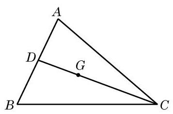
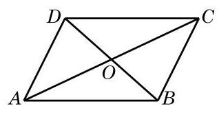
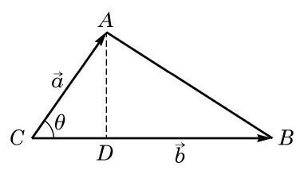
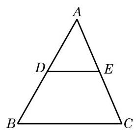
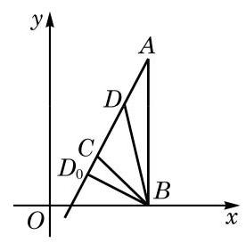
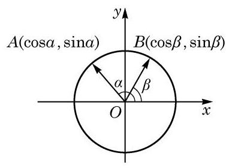
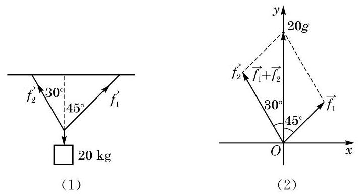
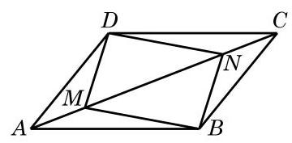
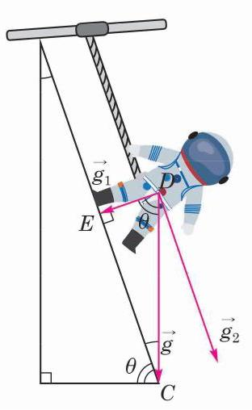

例题 1
例 1 已知 是直线 上一点,且 为实数,且 的坐标分别为 . 求点 的坐标 .
学生阅读版 / 沪教版高中数学
必修第二册
第8章平面向量 · 保留教材主线与原题
教材与正式教参整合
向量在数学、物理以及实际生活中都有着广泛的应用. 上一节末我们给出了向量在代数中的应用, 本节将继续通过例题给出更多的应用. 先考虑一些几何问题.
例 1 已知 是直线 上一点,且 为实数,且 的坐标分别为 . 求点 的坐标 .
例 2 已知 三个顶点 的坐标分别是 ,求此三角形重心 的坐标.

图 8-4-1
例 3 证明: 对角线互相平分的四边形是平行四边形.
已知 如图 8-4-2,设四边形 的对角线 交于点 ,且 .
求证 是平行四边形.

图 8-4-2
例 4 在 中,设 ,记 的面积为 .
(1)求证: ；
(2)设 . 求证:

图 8-4-3

(第 2 题)
例 5 如图 8-4-4,平面上 三点的坐标分别是 . 已知小明在点 处休憩,有只小狗沿着 所在直线来回跑动. 问: 其在什么位置时,离小明最近?

图 8-4-4
例 6 用向量方法证明:
我们要求出 的余弦). 注意到交换 与 不影响要证明的公式,可以假设从 旋转到 的最小正角就是 . 这个角与角 有相同的始边与终边,于是

图 8-4-5
例 7 将质量为 的物体用两根绳子悬挂起来,如图 8-4-6(1)，两根绳子与铅垂线的夹角分别为 与 . 求它们分别提供的拉力的大小. (结果精确到 )

图 8-4-6
(1)求 ；
(2)求 与 的合力对质点所做的功.

(第 5 题)

图 8-4-7
地球的重力加速度与月球以及其他星球的重力加速度是不同的. 为了使宇航员适应不同的重力环境, 宇航训练部建造了训练装置:如图 8-4-7，一个可滑动的连杆与人的腰部联结，人在一个固定的斜面上行走，连杆与斜面始终保持平行，适当调整这个斜面的位置, 可使人对斜面的作用力相当于人在某个星体上的重力.
(1)已知月球重力加速度 是地球重力加速度 的 ，为模拟月球重力对宇航人员的作用，角 的大小应如何选取？
(2)先查出火星重力加速度的数据，并判断当 时该装置能否训练去火星的宇航员.